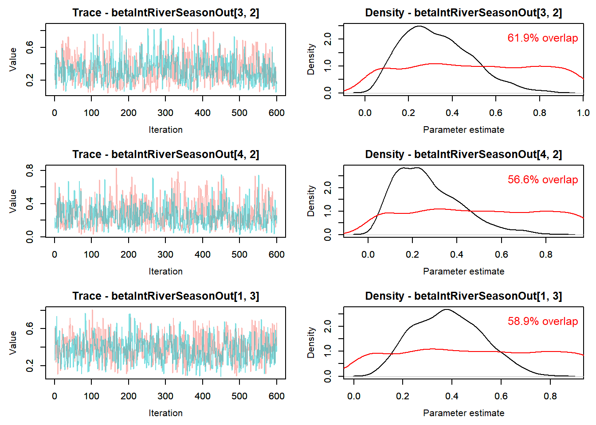
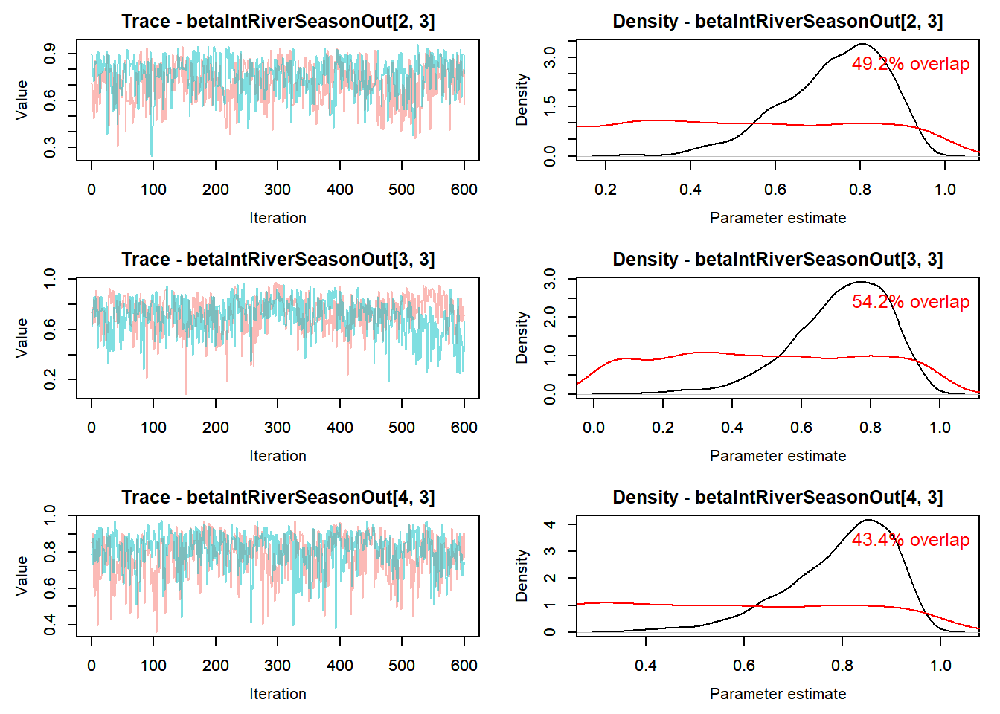
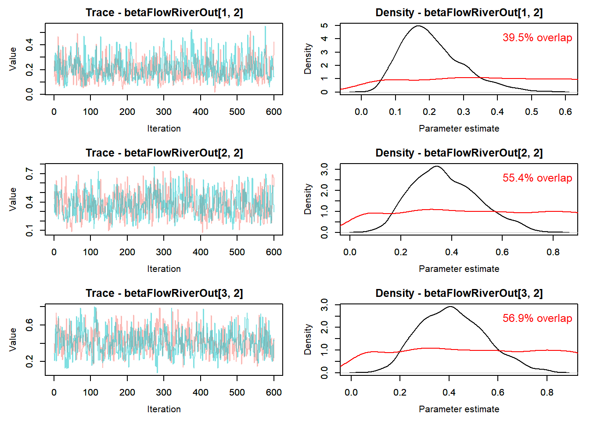
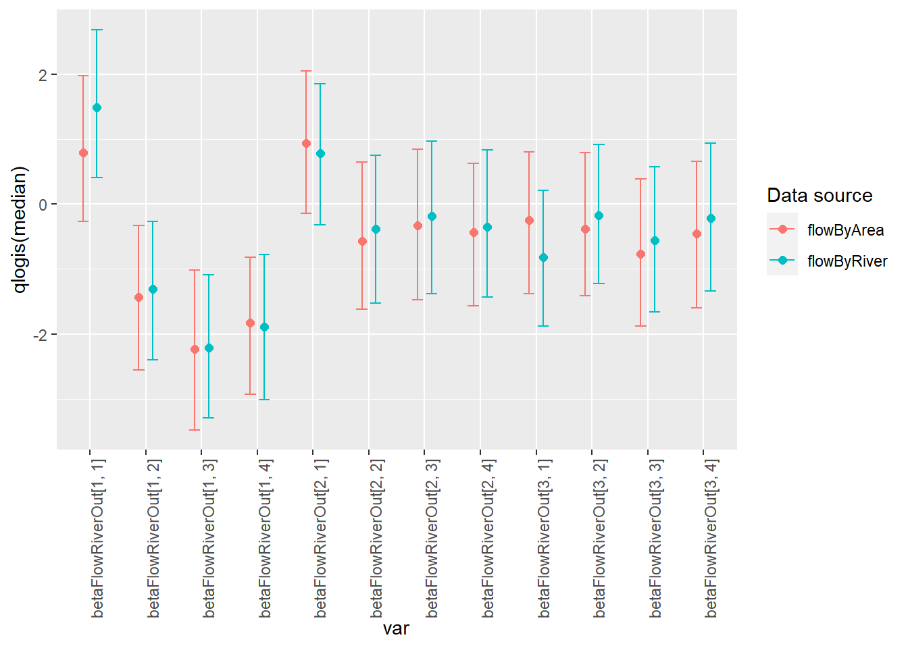
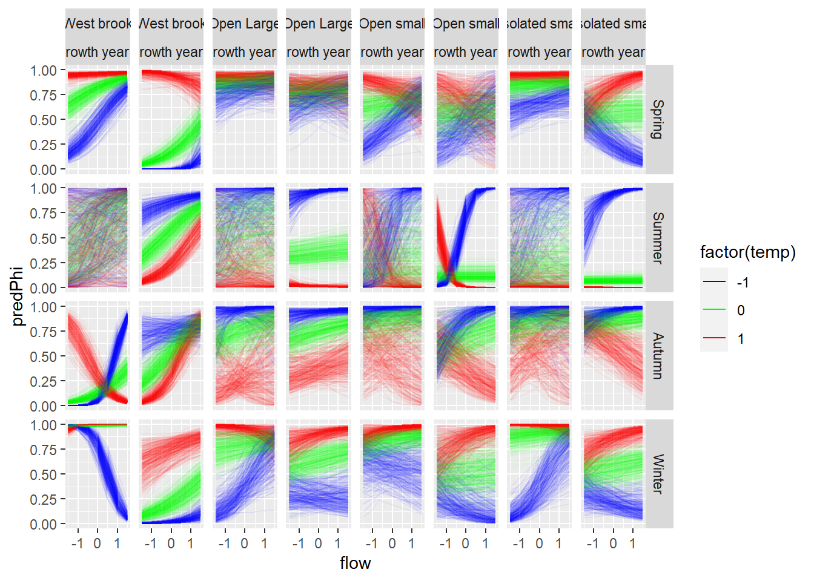
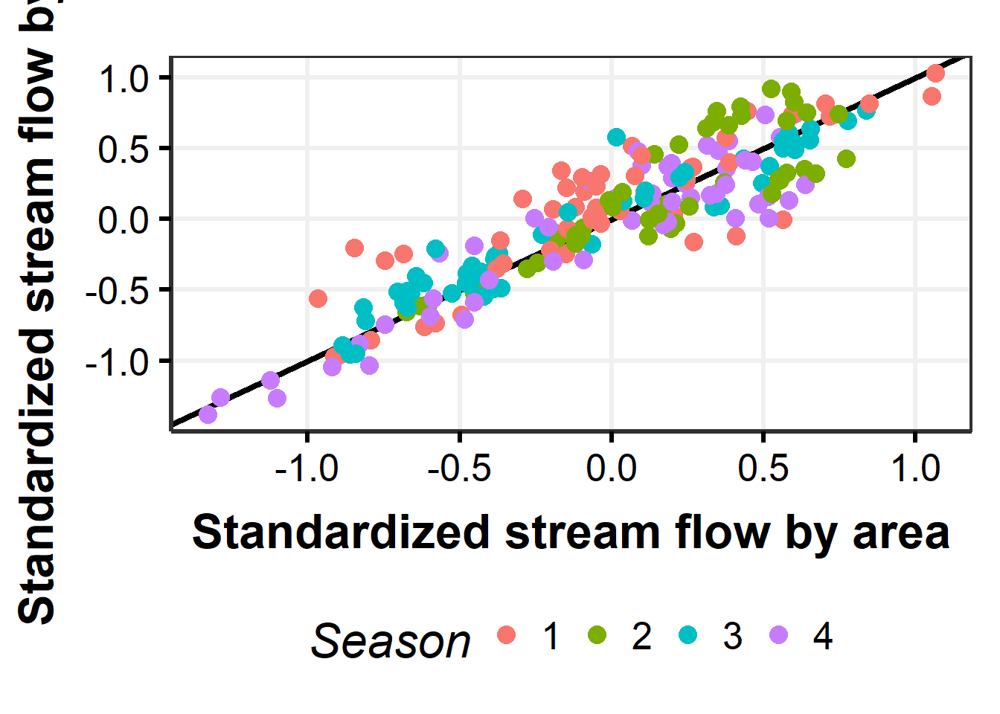
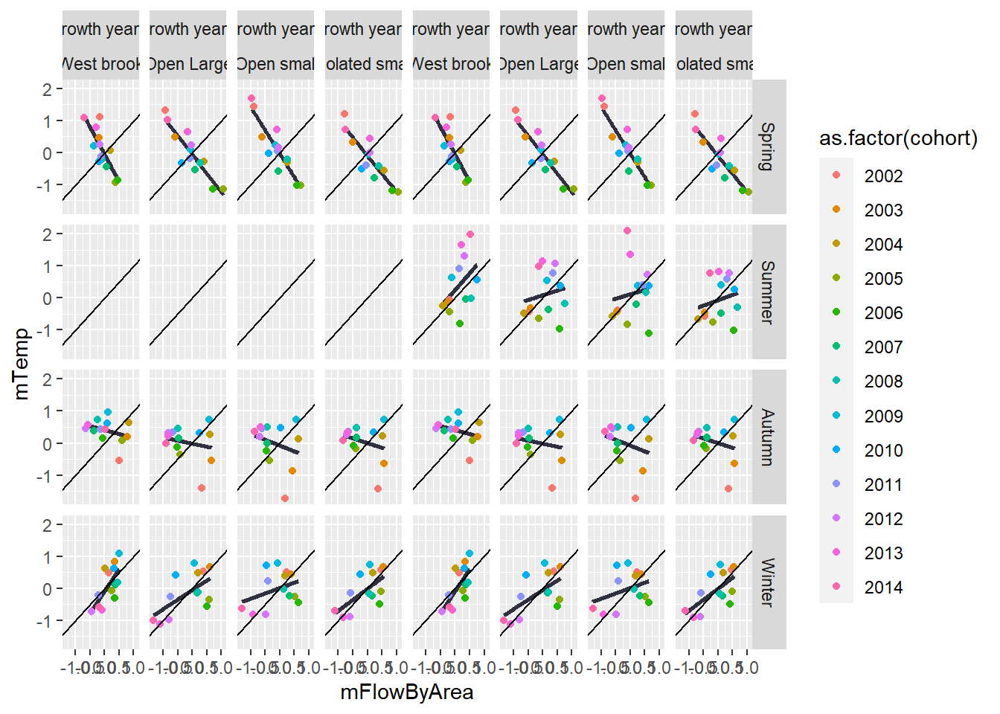
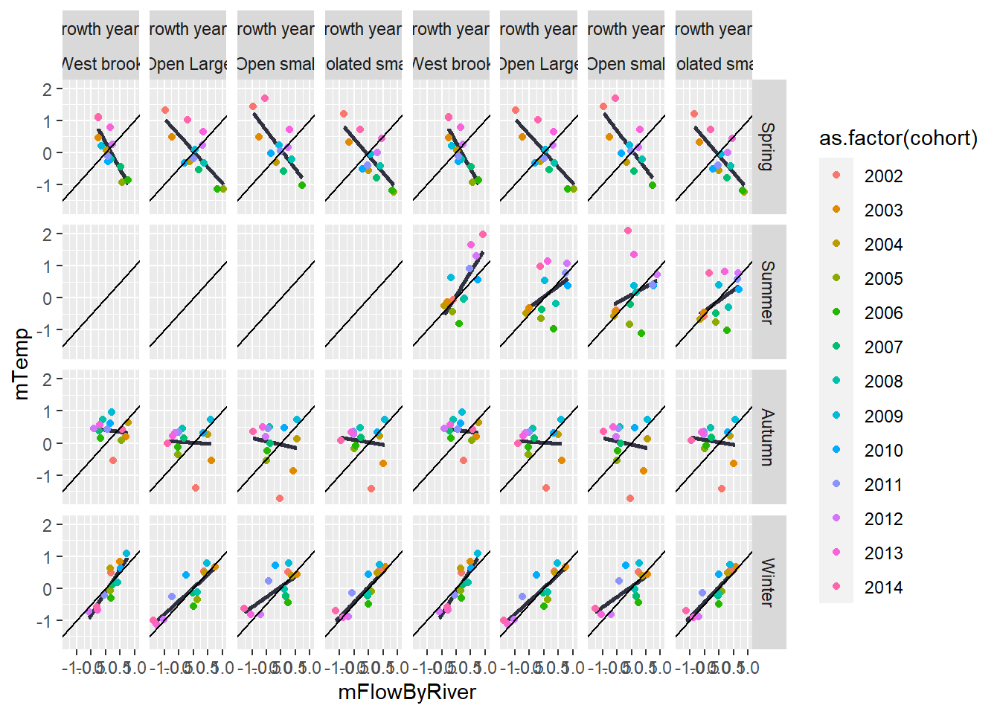
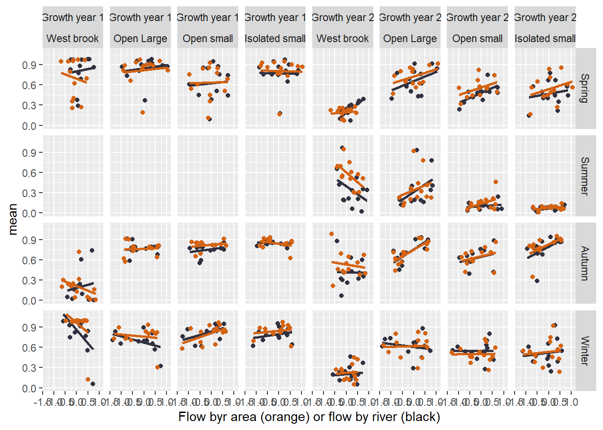

14 Flow effects on survival (phi) models with cohort structure - 4 rivers (WB)
THis is a ‘fork’ of modelsCMR_ft_cohort_Flow_OB.qmd where the models were originally worked out. following Daniel’s march 2023 changes, Ben adapted the …_OB file to this …_WB file.
As of 3/13/23 - Following trouble getting the models to run on workbench (runs timed out) and on a laptop with targets (broken into targets ./R/hold/modelCMR_ttt_ft_cohort_WB.R - get error following Rmodel step, run with a function ./R/hold/modelCMR_ttt_ft_cohort_WB_usingFunction.R - did not finish [seems like targets is interrupting fitting somehow…]), now models are run using a function (run_ttt_model() in ./models/cmrFlowWB/modelCMR_ttt_ft_cohort_WB_functionsToSource.R) and saved to a file in ./models/cmrFlowWB/runsOut/modx/. Targets will read in the files for analysis using modelCMR_ttt_WB.R.
File names are ttt_WB_mcmc_modx.csv and the targets are mcmcOutModx.
Summary File to run models: wbBook_quarto_targets/models/cmrFlowWB/modelCMR_ttt_ft_cohort_WB_makeFile.R ->
Model running functions:
wbBook_quarto_targets/models/cmrFlowWB/modelCMR_ttt_ft_cohort_WB_functionsToSource.R ->
File to add model output to target:
wbBook_quarto_targets/R/modelCMR_ttt_WB.R
will need to update this section of text Probability of survival (phi) model structure:
logit(phi[t,i]) <-
betaInt[ isYOY[i,t],season[t],cohort[i]] +
betaFlow[1,isYOY[i,t],season[t]] * flow[i,t] +
betaFlow[2,isYOY[i,t],season[t]] * temp[i,t] +
betaFlow[3,isYOY[i,t],season[t]] * temp[i,t] * flow[i,t]
Probability of capture (p) model structure:
logit(p[t,i]) <- betaP[isYOY[i,t],season[t-1],cohort[i]]
The goal of this modelling exercise is to evaluate the effect of new tributary-specific stream flow estimates on survival of brook trout. Here, we compare survival within one tributary (O’Bear Brook) with flow input data as 1) single flow estimate for all locations (historical approach) and 2) hindcasted flows for each tributary based on new tributary-specific flows which are available since 2000.
The goal is to compare survival estimates with tributary-specific flow to estimates with common flow across locations.
Note: a model without cohort structure is here modelsCMR_ft_Flow_OB.qmd but is not included because results are similar but without the cohort estimates.
Structure options include [species, cohort, season, isYOY, flow, flow^2]
Model naming mod1 = ttt_ft_cohort_WB mod2 = ttt_fByRiverT_cohort_WB
14.0.1 Model with original flow data
Cohort-dependent estimates of phi and p with flow and temperature hierarchical effects
14.0.1.1 Retrieve model results
Model is run using this file wbBook_quarto_targets/models/cmrFlowWB/modelCMR_ttt_ft_cohort_WB_makeFile.R
Code
# Following https://oliviergimenez.github.io/bayesian-cr-workshop/worksheets/4_demo.html
#
#out_flow <- tar_read(toSave_ttt_WB_target)
# out_flow_target <- tar_read(toSave_ttt_WB_target)
load(paste0('./models/cmrFlowWB/runsOut/mod', 1, '/ttt_WB_mod', 1, '_mostRecent.RData'))
out_flow <- d
#out_flow <- read.csv( paste0('./models/cmrFlowWB/runsOut/mod', modelNum, '/ttt_WB_mcmc_mod', modelNum,'_chains12.csv'))
MCMCplot(object = out_flow$mcmc)Code
summary_flow <- MCMCsummary(object = out_flow$mcmc, round = 3) %>%
mutate(flowData = "flow") %>%
rownames_to_column(var = "var")
#summary_flow %>% filter(grepl("phi", var))
#summary_flow %>% filter(grepl("betaPhiYOYSeason", var))
#summary_flow %>% filter(grepl("betaFlow", var))
#summary_flow %>% filter(grepl("betaInt", var))
priors <- runif(out_flow$nIter * out_flow$nChains, 0, 1)
MCMCtrace(object = out_flow$mcmc,
#ISB = FALSE,
#exact = TRUE,
params = c(
"betaIntRiverSeason"#, "betaPhiYOYSeason","betaPYOYSeason"
# "betaIntTop", "betaPhiTop","betaFlowTop","betaPTop"
# "betaInt", "betaPhi","betaFlow","betaP",
# "betaIntOut", "betaPhiOut","betaFlowOut","betaPOut"
),
pdf = FALSE,
priors = priors)





Code
MCMCtrace(object = out_flow$mcmc,
#ISB = FALSE,
#exact = TRUE,
params = c(
"betaFlowRiver"
# "betaIntYOY", "betaPhiYOY","betaFlowYOY","betaPYOY"
# "betaInt", "betaPhi","betaFlow","betaP",
# "betaIntOut", "betaPhiOut","betaFlowOut","betaPOut"
),
pdf = FALSE,
priors = priors)



14.0.2 Model with flow data hindcast for each rvier
Cohort-dependent estimates of phi and p with flowByRiver hierarchical effects
14.0.2.1 Retrieve model results
Model is run using this file wbBook_quarto_targets/models/cmrFlowWB/modelCMR_ttt_ft_cohort_WB_makeFile.R
Code
# Following https://oliviergimenez.github.io/bayesian-cr-workshop/worksheets/4_demo.html
#
#out_flowByRiver <- tar_read(mcmcOutMod2)
load(paste0('./models/cmrFlowWB/runsOut/mod', 2, '/ttt_WB_mod', 2, '_mostRecent.RData'))
out_flowByRiver <- d
MCMCplot(object = out_flowByRiver$mcmc)
Code
summary_flowByRiver <- MCMCsummary(object = out_flowByRiver$mcmc, round = 3) %>%
mutate(flowData = "flowByRiver") %>%
rownames_to_column(var = "var")
#summary_flowByRiver %>% filter(grepl("betaIntYOYSeason", var))
#summary_flowByRiver %>% filter(grepl("betaPhiYOYSeason", var))
#summary_flowByRiver %>% filter(grepl("betaFlow", var))
priors <- runif(out_flowByRiver$nIter * out_flowByRiver$nChains, 0, 1)
MCMCtrace(object = out_flowByRiver$mcmc,
#ISB = FALSE,
#exact = TRUE,
params = c(
"betaIntRiverSeason"#, "betaPhiYOY","betaFlowYOY","betaPYOY"
),
pdf = FALSE,
priors = priors)


Code
# MCMCtrace(object = out_flowByRiver$mcmc,
# #ISB = FALSE,
# #exact = TRUE,
# params = c("betaInt"),
# pdf = FALSE,
# priors = priors)14.0.3 Compare parameter estimates of models with flow and flowByRiver
Code
both <- bind_rows(summary_flow, summary_flowByRiver) %>%
rename(lo = '2.5%', hi = '97.5%', median = '50%')
# mutate(medianIlogit = ilogit(median),
# loIlogit = ilogit(lo),
# hiIlogit = ilogit(hi))
ggplot(both %>% filter(grepl("betaFlowTop", var)), aes(color = flowData)) +
geom_point(aes(var, median), size = 2, position = position_dodge(width = 0.5)) +
geom_errorbar( aes(var, ymin = lo, ymax = hi), width = 0.4, position = position_dodge(width = 0.5)) Code
ggplot(both %>% filter(grepl("betaFlowRiver", var)), aes(color = flowData)) +
geom_point(aes(var, median), size = 2, position = position_dodge(width = 0.5)) +
geom_errorbar( aes(var, ymin = lo, ymax = hi), width = 0.4, position = position_dodge(width = 0.5)) +
theme(axis.text.x = element_text(angle = 90, vjust = 1, hjust=1))
Code
ggplot(both %>% filter(grepl("betaFlow", var)), aes(color = flowData)) +
geom_point(aes(var, median), size = 2, position = position_dodge(width = 0.5)) +
geom_errorbar( aes(var, ymin = lo, ymax = hi), width = 0.4, position = position_dodge(width = 0.5)) +
theme(axis.text.x = element_text(angle = 90, vjust = 1, hjust=1))
Code
ggplot(both %>% filter(grepl("betaIntTop", var)), aes(color = flowData)) +
geom_point(aes(var, median), size = 2, position = position_dodge(width = 0.5)) +
geom_errorbar( aes(var, ymin = lo, ymax = hi), width = 0.4, position = position_dodge(width = 0.5)) +
theme(axis.text.x = element_text(angle = 90, vjust = 1, hjust=1))
Code
ggplot(both %>% filter(grepl("betaIntRiver\\[", var)), aes(color = flowData)) +
geom_point(aes(var, median), size = 2, position = position_dodge(width = 0.5)) +
geom_errorbar( aes(var, ymin = lo, ymax = hi), width = 0.4, position = position_dodge(width = 0.5)) +
theme(axis.text.x = element_text(angle = 90, vjust = 1, hjust=1))
Code
ggplot(both %>% filter(grepl("betaIntRiverSeason", var)), aes(color = flowData)) +
geom_point(aes(var, median), size = 2, position = position_dodge(width = 0.5)) +
geom_errorbar( aes(var, ymin = lo, ymax = hi), width = 0.4, position = position_dodge(width = 0.5)) +
theme(axis.text.x = element_text(angle = 90, vjust = 1, hjust=1))
Code
ggplot(both %>% filter(grepl("betaIntRiverYOYSeason", var)), aes(color = flowData)) +
geom_point(aes(var, median), size = 2, position = position_dodge(width = 0.5)) +
geom_errorbar( aes(var, ymin = lo, ymax = hi), width = 0.4, position = position_dodge(width = 0.5)) +
theme(axis.text.x = element_text(angle = 90, vjust = 1, hjust=1))
Code
# ggplot(both %>% filter(grepl("betaInt\\[", var)), aes(color = flowData)) +
# geom_point(aes(var, median), size = 2, position = position_dodge(width = 0.5)) +
# geom_errorbar( aes(var, ymin = lo, ymax = hi), width = 0.4, position = position_dodge(width = 0.5)) +
# theme(axis.text.x = element_text(angle = 90, vjust = 1, hjust=1))
# ggplot(both %>% filter(grepl("betaP", var)), aes(color = flowData)) +
# geom_point(aes(var, mean), size = 2, position = position_dodge(width = 0.5)) +
# geom_errorbar( aes(var, ymin = lo, ymax = hi), width = 0.4, position = position_dodge(width = 0.5)) +
# theme(axis.text.x = element_text(angle = 90, vjust = 1, hjust=1))
# ggplot(both %>% filter(grepl("betaPOut", var)), aes(color = flowData)) +
# geom_point(aes(var, mean), size = 2, position = position_dodge(width = 0.5)) +
# geom_errorbar( aes(var, ymin = lo, ymax = hi), width = 0.4, position = position_dodge(width = 0.5)) +
# theme(axis.text.x = element_text(angle = 90, vjust = 1, hjust=1))Code
# out_flow$mcmc$chain1 %>%
# filter(grepl("phi\\[", var)) %>%
# mutate(
# flowData = "flow",
# tmp = str_match(var, "\\[([0-9]+), ([0-9]+), ([0-9]+)\\]")[, 2:4] %>% as.data.frame(),
# param = tmp$V1,
# isYOY = tmp$V2,
# season = tmp$V3
# ) %>%
# select(-tmp)14.0.4 Survival comparisons
Code
getBetas <- function(d) {
#betaFlow
betaFlow <- d %>%
filter(grepl("betaInt\\[", var)) %>%
mutate(
flowData = "flow",
tmp = str_match(var, "\\[([0-9]+), ([0-9]+), ([0-9]+)\\]")[, 2:4] %>% as.data.frame(),
param = tmp$V1,
isYOY = tmp$V2,
season = tmp$V3
) %>%
select(-tmp)
betaFlowYOY <- d %>%
filter(grepl("betaFlowYOY", var)) %>%
mutate(
flowData = "flow",
tmp = str_match(var, "\\[([0-9]+), ([0-9]+)\\]")[, 2:3] %>% as.data.frame(),
param = tmp$V1,
isYOY = tmp$V2,
) %>%
select(-tmp)
betaFlowTop <- d %>%
filter(grepl("betaFlowTop", var)) %>%
mutate(
flowData = "flow",
tmp = str_match(var, "\\[([0-9]+)\\]") %>% as.data.frame(),
param = tmp$V2
) %>%
select(-tmp)
}
getBetaIntOuts <- function(d, dataType = "flow") {
#betaFlow
betaInt <- d %>%
filter(grepl("betaInt\\[", var)) %>%
mutate(
flowData = dataType,
tmp = str_match(var, "\\[([0-9]+), ([0-9]+), ([0-9]+), ([0-9]+)\\]")[, 2:5] %>% as.data.frame(),
river = tmp$V1,
isYOY = tmp$V2,
season = tmp$V3,
cohort = tmp$V4,
varName = "betaInt"
) %>%
select(-tmp) %>%
filter(!(season == 2 & isYOY == 1))
betaIntRiver <- d %>%
filter(grepl("betaIntRiver\\[", var)) %>%
mutate(
flowData = dataType,
tmp = str_match(var, "\\[([0-9]+)\\]") %>% as.data.frame(),
river = tmp$V2,
varName = "betaIntRiver"
) %>%
select(-tmp)
betaIntRiverSeason <- d %>%
filter(grepl("betaIntRiverSeason\\[", var)) %>%
mutate(
flowData = dataType,
tmp = str_match(var, "\\[([0-9]+), ([0-9]+)\\]")[, 2:3] %>% as.data.frame(),
river = tmp$V1,
season = tmp$V2,
varName = "betaIntRiverSeason"
) %>%
select(-tmp) #%>%
#filter(!(season == 2 & isYOY == 1))
betaIntRiverYOYSeason <- d %>%
filter(grepl("betaIntRiverYOYSeason\\[", var)) %>%
mutate(
flowData = dataType,
tmp = str_match(var, "\\[([0-9]+), ([0-9]+), ([0-9]+)\\]")[, 2:4] %>% as.data.frame(),
river = tmp$V1,
isYOY = tmp$V2,
season = tmp$V3,
varName = "betaIntRiverYOYSeason"
) %>%
select(-tmp) %>%
filter(!(season == 2 & isYOY == 1))
return(
bind_rows(betaInt, betaIntRiver, betaIntRiverSeason, betaIntRiverYOYSeason) %>%
mutate(
cohort = as.numeric(cohort) + 2002 - 1)
)
}14.0.4.1 Get betaIntOut estimates
Code
betaIntFlow <- getBetaIntOuts(summary_flow, "flow")
betaIntFlowByRiver <- getBetaIntOuts(summary_flowByRiver, "flowByRiver")
betaInts <- bind_rows(betaIntFlow, betaIntFlowByRiver) %>%
rename(lo = '2.5%', hi = '97.5%', median = '50%')Code
# Define the facet labeller function
labelsIntYOY <- c(
"1" = "Growth year 1",
"2" = "Growth year 2"
)
labelsIntSeason <- c(
"1" = "Spring",
"2" = "Summer",
"3" = "Autumn",
"4" = "Winter"
)
labelsIntRiver <- c(
"1" = "West brook",
"2" = "Open Large",
"3" = "Open small",
"4" = "Isolated small"
)
global_labellerInt <- labeller(
isYOY = labelsIntYOY,
season = labelsIntSeason,
river = labelsIntRiver
#.default = label_both
)
ggplot(betaInts %>% filter(varName == "betaInt"), aes(cohort, mean, color = flowData)) +
geom_point(size = 2, position = position_dodge(width = 0.5)) +
geom_errorbar(aes(cohort, ymin = lo, ymax = hi), width = 0.4, position = position_dodge(width = 0.5)) +
scale_x_continuous("Cohort") +
scale_y_continuous("Suvrival") +
facet_grid(season~isYOY+river, labeller = global_labellerInt) +
guides(color = guide_legend(
title = "Data source"
))Code
global_labellerIntYOYSeason <- labeller(
isYOY = labelsIntYOY
# season = labelsIntSeason
#.default = label_both
)
ggplot(betaInts %>% filter(varName == "betaIntRiverSeason"), aes(season, mean, color = flowData)) +
geom_point(size = 2, position = position_dodge(width = 0.5)) +
geom_errorbar(aes(season, ymin = lo, ymax = hi), width = 0.4, position = position_dodge(width = 0.5)) +
scale_x_discrete("Season") +
scale_y_continuous("Suvrival") +
facet_wrap(~river, labeller = global_labellerInt) +
guides(color = guide_legend(
title = "Data source"
))Code
ggplot(betaInts %>% filter(varName == "betaIntRiver"), aes(isYOY, mean, color = flowData)) +
geom_point(size = 2, position = position_dodge(width = 0.5)) +
geom_errorbar(aes(isYOY, ymin = lo, ymax = hi), width = 0.4, position = position_dodge(width = 0.5)) +
facet_wrap(~river, labeller = global_labellerInt)14.0.5 Flow effect predictions
Code
#Has not been updated to new mcmc model
getPredictions_FlowYOYSeasonCohort <- function(toSave, everyNIters = 10, flowStep = 0.5){
mcmc <- toSave$mcmc
## betaInt
predictorsBetaInt <- expand.grid(
iter = seq(1, dim(mcmc$chain1)[1], everyNIters),
isYOY = 1:2,
season = 1:toSave$myConstants$nSeasons,
cohort = 1:toSave$myConstants$nCohorts
)
for(i in 1:nrow(predictorsBetaInt)){
predictorsBetaInt$betaInt[i] <- mcmc$chain1[[predictorsBetaInt[i, "iter"],
paste0("betaInt[", predictorsBetaInt[i, "isYOY"],
", ", predictorsBetaInt[i, "season"],
", ", predictorsBetaInt[i, "cohort"],
"]")
]]
}
# ## betaPhi
# predictorsBetaPhi <- expand.grid(
# iter = seq(1, dim(mcmc$chain1)[1], everyNIters),
# isYOY = 1:2,
# season = 1:toSave$myConstants$nSeasons,
# cohort = 1:toSave$myConstants$nCohorts
# )
#
# for(i in 1:nrow(predictorsBetaPhi)){
# predictorsBetaPhi$betaPhi[i] <- mcmc$chain1[[predictorsBetaPhi[i, "iter"],
# paste0("betaPhi[", predictorsBetaPhi[i, "isYOY"],
# ", ", predictorsBetaPhi[i, "season"],
# ", ", predictorsBetaPhi[i, "cohort"],
# "]")
# ]]
# }
## betaFlow
predictorsBetaFlow <- expand.grid(
iter = seq(1, dim(mcmc$chain1)[1], everyNIters),
isYOY = 1:2,
season = 1:toSave$myConstants$nSeasons
# cohort = 1:toSave$myConstants$nCohorts
)
for(i in 1:nrow(predictorsBetaFlow)){
predictorsBetaFlow$betaFlow1[i] <- mcmc$chain1[[predictorsBetaFlow[i, "iter"],
paste0("betaFlow[1, ", predictorsBetaFlow[i, "isYOY"],
", ", predictorsBetaFlow[i, "season"],
# ", ", predictorsBetaFlow[i, "cohort"],
"]")
]]
predictorsBetaFlow$betaFlow2[i] <- mcmc$chain1[[predictorsBetaFlow[i, "iter"],
paste0("betaFlow[2, ", predictorsBetaFlow[i, "isYOY"],
", ", predictorsBetaFlow[i, "season"],
# ", ", predictorsBetaFlow[i, "cohort"],
"]")
]]
predictorsBetaFlow$betaFlow3[i] <- mcmc$chain1[[predictorsBetaFlow[i, "iter"],
paste0("betaFlow[3, ", predictorsBetaFlow[i, "isYOY"],
", ", predictorsBetaFlow[i, "season"],
# ", ", predictorsBetaFlow[i, "cohort"],
"]")
]]
}
predictorsAll <- expand.grid(
iter = seq(1, dim(mcmc$chain1)[1], everyNIters),
isYOY = 1:2,
cohort = 1:toSave$myConstants$nCohorts,
season = 1:toSave$myConstants$nSeasons,
flow = seq(-1.5, 1.5, flowStep),
temp = seq(-1.5, 1.5, flowStep)
)
preds <- predictorsAll %>%
left_join(predictorsBetaInt) %>%
left_join(predictorsBetaFlow) %>%
# left_join(predictorsBetaPhi) %>%
mutate(predPhi = plogis(betaInt + betaFlow1 * flow + betaFlow2 * temp + betaFlow3 * flow * temp))
return(preds)
}Code
getPredictions_FlowRiverYOYSeason <- function(toSave, everyNIters = 10, flowStep = 0.5){
mcmc <- toSave$mcmc
## betaInt
predictorsBetaInt <- expand.grid(
iter = seq(1, dim(mcmc$chain1)[1], everyNIters),
river = 1:toSave$myConstants$nRivers,
isYOY = 1:2,
season = 1:toSave$myConstants$nSeasons
)
for(i in 1:nrow(predictorsBetaInt)){
predictorsBetaInt$betaInt[i] <-
mcmc$chain1[[
predictorsBetaInt[i, "iter"],
paste0("betaIntRiverYOYSeason[",
predictorsBetaInt[i, "river"],
", ",
predictorsBetaInt[i, "isYOY"],
", ",
predictorsBetaInt[i, "season"],
"]")
]]
}
# ## betaPhi
# predictorsBetaPhi <- expand.grid(
# iter = seq(1, dim(mcmc$chain1)[1], everyNIters),
# isYOY = 1:2,
# season = 1:toSave$myConstants$nSeasons
# # cohort = 1:toSave$myConstants$nCohorts
# )
#
# for(i in 1:nrow(predictorsBetaPhi)){
# predictorsBetaPhi$betaPhi[i] <- mcmc$chain1[[predictorsBetaPhi[i, "iter"],
# paste0("betaPhiYOYSeason[", predictorsBetaPhi[i, "isYOY"],
# ", ", predictorsBetaPhi[i, "season"],
# # ", ", predictorsBetaPhi[i, "cohort"],
# "]")
# ]]
# }
## betaFlow
predictorsBetaFlow <- expand.grid(
iter = seq(1, dim(mcmc$chain1)[1], everyNIters),
river = 1:toSave$myConstants$nRivers,
isYOY = 1:2,
season = 1:toSave$myConstants$nSeasons
)
for(i in 1:nrow(predictorsBetaFlow)){
predictorsBetaFlow$betaFlow1[i] <-
mcmc$chain1[[
predictorsBetaFlow[i, "iter"],
paste0("betaFlow[1, ",
predictorsBetaFlow[i, "river"],
", ",
predictorsBetaFlow[i, "isYOY"],
", ",
predictorsBetaFlow[i, "season"],
"]")
]]
predictorsBetaFlow$betaFlow2[i] <-
mcmc$chain1[[
predictorsBetaFlow[i, "iter"],
paste0("betaFlow[2, ",
predictorsBetaFlow[i, "river"],
", ",
predictorsBetaFlow[i, "isYOY"],
", ",
predictorsBetaFlow[i, "season"],
"]")
]]
predictorsBetaFlow$betaFlow3[i] <-
mcmc$chain1[[
predictorsBetaFlow[i, "iter"],
paste0("betaFlow[3, ",
predictorsBetaFlow[i, "river"],
", ",
predictorsBetaFlow[i, "isYOY"],
", ",
predictorsBetaFlow[i, "season"],
"]")
]]
}
predictorsAll <- expand.grid(
iter = seq(1, dim(mcmc$chain1)[1], everyNIters),
river = 1:toSave$myConstants$nRivers,
isYOY = 1:2,
season = 1:toSave$myConstants$nSeasons,
flow = seq(-1.5, 1.5, flowStep),
temp = seq(-1.5, 1.5, flowStep)
)
preds <- predictorsAll %>%
left_join(predictorsBetaInt) %>%
left_join(predictorsBetaFlow) %>%
# left_join(predictorsBetaPhi) %>%
mutate(predPhi = plogis(betaInt + betaFlow1 * flow + betaFlow2 * temp + betaFlow3 * flow * temp))
return(preds)
}Code
predFlowRiverYOYSeason <- getPredictions_FlowRiverYOYSeason(out_flow, everyNIters = 2) %>%
mutate(flowData = "flow")
predFlowByRiverRiverYOYSeason <- getPredictions_FlowRiverYOYSeason(out_flowByRiver, everyNIters = 2) %>%
mutate(flowData = "flowByRiver")
predBoth <- bind_rows(predFlowRiverYOYSeason, predFlowByRiverRiverYOYSeason)14.0.5.1 Graph effect flow predictions
Predictions based on flow from the flow extension curve - original approach
Code
colors <- c("blue", "green", "red")
ggplot(predFlowRiverYOYSeason %>% filter(temp %in% c(-1,0,1)), aes(flow, predPhi, group = ((paste0(iter,temp, sep = "_"))))) +
geom_line(aes(color = factor(temp)), alpha = 0.05) +
scale_color_manual(values = colors) +
guides(colour = guide_legend(override.aes = list(alpha = 1))) +
facet_grid(season ~ river+isYOY, labeller = global_labellerInt)
Predictions based on flow from flowByRiver
Code
ggplot(predFlowByRiverRiverYOYSeason %>% filter(temp %in% c(-1,0,1)), aes(flow, predPhi, group = ((paste0(iter,temp, sep = "_"))))) +
geom_line(aes(color = factor(temp)), alpha = 0.05) +
scale_color_manual(values = colors) +
guides(colour = guide_legend(override.aes = list(alpha = 1))) +
facet_grid(season ~ river+isYOY, labeller = global_labellerInt)Similar format to to the 2015 paper
Code
colors2 <- c("red", "green", "blue")
ggplot(predFlowRiverYOYSeason %>% filter(flow %in% c(-1,0,1)), aes(temp, predPhi, group = ((paste0(iter,flow, sep = "_"))))) +
geom_line(aes(color = factor(flow)), alpha = 0.05) +
scale_color_manual(values = colors2) +
guides(colour = guide_legend(override.aes = list(alpha = 1))) +
facet_grid(season ~ river+isYOY, labeller = global_labellerInt)
14.0.6 Relate flow/temp to survival
Get flow average flow and temp data for each occasion (cohort/season)
Flow data pathway - | Raw data in envDataWB_target from getDataEnv_targets.R | Data added to cdWB_CMR0_target using addEnvironmental() in getDataCMR_targets.R | Data scaled using scaleEnvData() in getDataCMR_targets.R | meanFlowScaled | meanFlowByRiverScaled | meanTemperatureScaled | cdWB_CMR0_target feeds into getEH_AIS() to create eh_WB_2002_2014_target | eh_WB_2002_2014_target\(data contains filtered data that created the components of eh_WB_2002_2014_target that are used for CMR analysis. We can use `eh_WB_2002_2014_target`\)data to get summary flow and temp data
Code
eh_WB_2002_2014_target = tar_read(eh_WB_2002_2014_target)
mFlowTemp <- eh_WB_2002_2014_target$data %>%
group_by(riverN, cohort, season) %>%
summarize(mFlow = mean(meanFlowScaled),
mFlowByRiver = mean(meanFlowByRiverScaled),
mTemp = mean(meanTemperatureScaled),
n = n()) %>%
rename(river = riverN) |>
mutate(season = as.character(season),
river = as.character(river))
betaIntsFT <- betaInts %>%
left_join(mFlowTemp)How do the flow metrics (river, byRiver) compare to each other?
Code
ggplot(betaIntsFT %>% filter(varName == "betaInt"), aes(mFlow, mFlowByRiver, color = as.factor(cohort))) +
geom_point() +
geom_abline(intercept = 0, slope = 1) +
facet_grid(season ~ isYOY+river, labeller = global_labellerInt)
How do flow/flowByRiver compare to temperature?
Code
ggplot(betaIntsFT %>% filter(varName == "betaInt"), aes(mFlow, mTemp)) +
geom_smooth(se = FALSE, color = "#303140", method = lm) +
geom_point(aes(color = as.factor(cohort))) +
geom_abline(intercept = 0, slope = 1) +
facet_grid(season ~ isYOY+river, labeller = global_labellerInt)
Code
ggplot(betaIntsFT %>% filter(varName == "betaInt"), aes(mFlowByRiver, mTemp)) +
geom_smooth(se = FALSE, color = "#303140", method = lm) +
geom_point(aes(color = as.factor(cohort))) +
geom_abline(intercept = 0, slope = 1) +
facet_grid(season ~ isYOY+river, labeller = global_labellerInt)
How do the flow metrics (river, byRiver) compare to survival estimates?
Code
ggplot(betaIntsFT %>% filter(varName == "betaInt"), aes(mFlow, mean)) +
geom_smooth(se = FALSE, color = "#303140", method = lm) +
geom_smooth(se = FALSE, color = "darkgrey") +
geom_point(aes(color = as.factor(cohort))) +
facet_grid(season ~ isYOY+river, labeller = global_labellerInt)
Code
ggplot(betaIntsFT %>% filter(varName == "betaInt"), aes(mFlowByRiver, mean)) +
geom_smooth(se = FALSE, color = "#303140", method = lm) +
geom_smooth(se = FALSE, color = "darkgrey") +
geom_point(aes(color = as.factor(cohort))) +
facet_grid(season ~ isYOY+river, labeller = global_labellerInt)
Code
ggplot(betaIntsFT %>% filter(varName == "betaInt"), aes(mTemp, mean)) +
geom_smooth(se = FALSE, color = "#303140", method = lm) +
geom_smooth(se = FALSE, color = "darkgrey") +
geom_point(aes(color = as.factor(cohort))) +
facet_grid(season ~ isYOY+river, labeller = global_labellerInt)
How do mean survival estimates compare to flow and flowByriver on the same graph?
Code
ggplot(betaIntsFT %>% filter(varName == "betaInt"), aes(mFlowByRiver, mean)) +
geom_smooth(se = FALSE, color = "#303140", method = lm) +
geom_point(color = "#303140") +
geom_smooth(aes(mFlow, mean), se = FALSE, color = "#d46313", method = lm) +
geom_point(aes(mFlow, mean), color = "#d46313") +
scale_x_continuous("Flow (orange) or flow by river (black)") +
facet_grid(season ~ isYOY+river, labeller = global_labellerInt)
Code
ggplot(betaIntsFT %>% filter(varName == "betaInt"), aes(mFlowByRiver, mean)) +
geom_smooth(se = FALSE, color = "#303140") +
geom_point(color = "#303140") +
geom_smooth(aes(mFlow, mean), se = FALSE, color = "#d46313") +
geom_point(aes(mFlow, mean), color = "#d46313") +
scale_x_continuous("Flow (orange) or flow by river (black)") +
facet_grid(season ~ isYOY+river, labeller = global_labellerInt)